{
const svg = d3
.create("svg")
.attr("viewBox", [0, 0, 500, 60])
.style("background-color", "#CCC");
svg
.append("circle")
.attr("cx", 50)
.attr("cy", 30)
.attr("r", 25)
.style("fill", "#e04a28");
return svg.node();
}Introdução a cartografia para a Web com o quarto
1 A Web 🕸️
1.1 Internet e WWW
A Internet nasceu de uma iniciativa militar americana. O primeiro nó da rede ARPANET (Advanced Research Project Agency Network), que deu origem à Internet, foi criado em 1969.

12 de março de 1989 : primeira versão da Web - Tim Berners-Lee, um investigador britânico do CERN, inventou a WWW.

O projeto, inicialmente designado por “World Wide Web”, foi concebido e desenvolvido para que os cientistas que trabalham em universidades e institutos de todo o mundo pudessem trocar informações instantaneamente.

Web ou Internet ?
A Internet é uma plataforma de envio de informações de um computador para outro. A Web, por seu lado, é um meio de visitar páginas de sítios a partir de navegadores através de computadores, tablets ou smartphones.
1991 - A Web é aberta a todos.
Em 1993, a tecnologia torna-se pública. A utilização da Web explodiu rapidamente na Internet.
No final de 1994, o número de servidores Web atingiu os 10.000!
O lançamento do Netscape, o primeiro navegador verdadeiramente comercializado em massa, também desempenhou um papel importante na sua democratização.
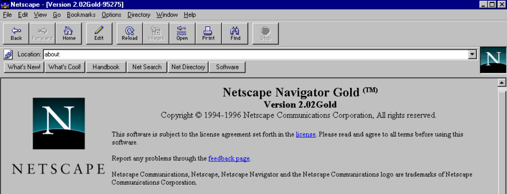
janeiro de 1994: Yahoo!
O número de sites estava a explodir, ao ponto de se tornar muito difícil para os utilizadores novatos da Internet orientarem-se. Dois estudantes de Stanford, Jerry Yang e David Filo, decidiram criar um gigantesco diretório de sítios, classificados por temas. Rapidamente se tornou o portal número 1 da Web.
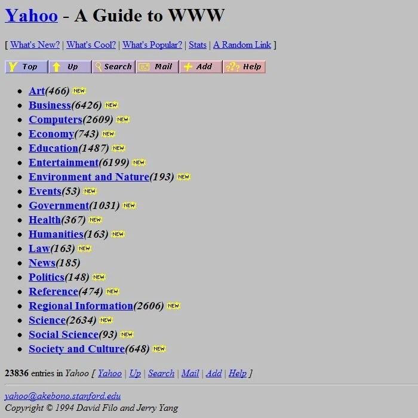
1998 O Google lança o seu motor de pesquisa

2010: o surgimento do HTML5, o futuro da Web
25 anos após a sua invenção, o HTML está a sofrer uma ligeira revolução, ainda sob o impulso de Tim Berners-Lee. Graças à quinta versão da norma de marcação de páginas Web - e a uma série de tecnologias associadas - estão a surgir novos serviços. O objetivo desta norma é transformar as páginas Web, ainda demasiado estáticas, em verdadeiros programas informáticos, que não estariam à altura das aplicações dos smartphones ou dos programas que instala no seu computador. E fazer do navegador a única aplicação de que necessitará.
Atualmente
Mais de 4 mil milhões de utilizadores
1.2 Linguagens para a Web
Por detrás da Web, existem linguagens informáticas que são interpretadas diretamente nos navegadores.

HTML
A HyperText Markup Language, geralmente abreviada HTML, é o esqueleto de uma página Web. É a estrutura do documento. O HTML é estruturado através de etiquetas.
<!DOCTYPE html>
<html>
<head>
<title>Page Title</title>
</head>
<body>
<h1>This is a Heading</h1>
<p>This is a paragraph.</p>
</body>
</html>CSS
As folhas de estilo em cascata (CSS) são uma linguagem informática que descreve a apresentação de documentos HTML. As CSS definem o estilo e o posicionamento dos elementos na página.
body {
background-color: lightblue;
}
h1 {
color: white;
text-align: center;
}
p {
font-family: verdana;
font-size: 20px;
}Canvas
Desde o HTML5, é possível desenhar diretamente no navegador Web. Com o Canvas em modo raster (pixéis)
Este código
<canvas id="myCanvas2" width="100" height ="100" style="border:1px
solid #000000; background-color: steelblue;"></canvas>resulta em :
SVG
SVG (Scalable Vetor Graphics) é um formato de dados concebido para descrever conjuntos de gráficos vectoriais. É o formato utilizado no Inkscape.
Este código::
<svg viewBox="0 0 1000 100" xmlns="http://www.w3.org/2000/svg">
<rect x="0" y="0" width="100px" height="100px" fill="#F2CD3B" stroke="#06000C" />
</svg>resulta nisso :
Nota
As coordenadas [0,0] estão no canto superior esquerdo.

JavaScript
Esta é a linguagem de script do browser.

1.3 JavaScript
O JavaScript é uma linguagem de programação com quase 30 anos.
1995
A linguagem Javascript foi criada em dez dias, em maio de 1995, por Brendan Eich, para a Netscape Communications Corporation. Inicialmente, a ideia era construir uma pequena linguagem para interação em páginas Web. Note-se que Javascript não é JAVA!
1997

A linguagem Javascript é normalizada desde 1997 pela comissão TC39 da ECMA International.
2008
Os navegadores Web têm vindo a trabalhar em novos motores para melhorar o desempenho. O V8 é um motor JavaScript de código aberto desenvolvido pelo projeto Chromium para os navegadores Web Google Chrome e Chromium (última versão em 31 de janeiro de 2022). Existe também o SpiderMonkey para o Firefox, o Chakra para o Microsoft Edge e o JavaScriptCore para o Safari.
2009
Criação do Node.js por Ryan Dahl, que permite a utilização do JavaScript como linguagem de programação back-end.
2015
Desde 2015 (ES6 ou ES2015), a linguagem JavaScript amadureceu. Tem um bom desempenho. E é implementada de forma harmonizada em todos os browsers. Estamos a falar de JavaScript moderno
Amanhã?
Todos os anos são adicionadas novas funcionalidades à linguagem.
Ver : observablehq.com/@robertbatty/ecmascript-2015-2022
Uma grande comunidade
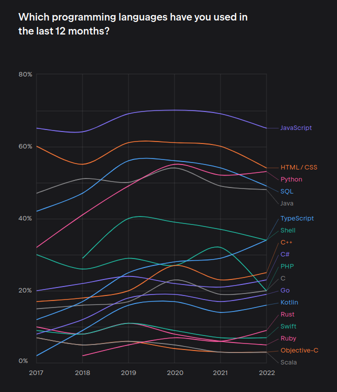
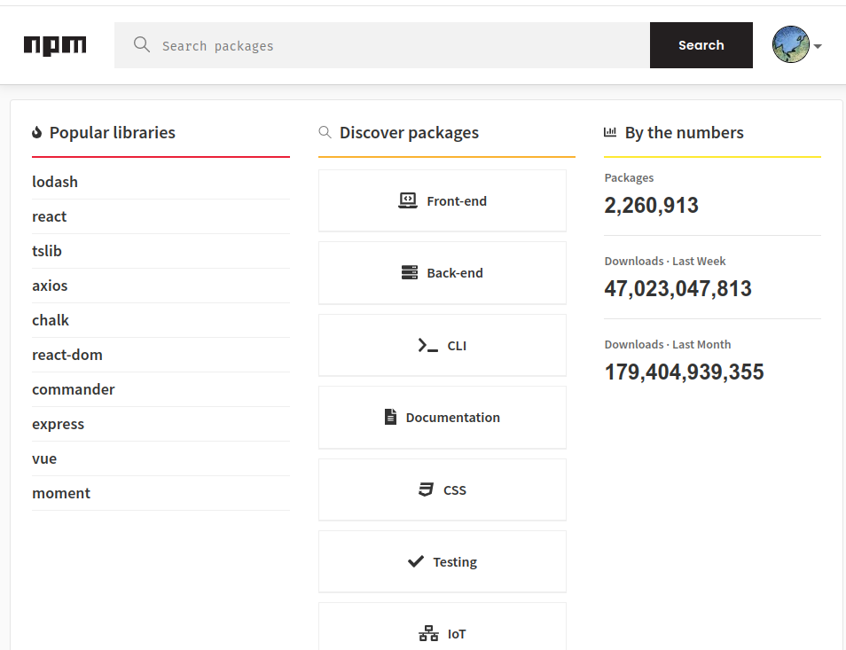Right column
O JavaScript é uma linguagem antiga com uma comunidade muito grande.
O JavaScript é atualmente uma das linguagens mais utilizadas pelos programadores de computadores.
Existem atualmente mais de 2 milhões de pacotes disponíveis no npm.
JavaScript permite-lhe desenhar no browser
{
const svg = d3
.create("svg")
.attr("viewBox", [0, 0, 500, 60])
.style("background-color", "#CCC");
svg
.append("circle")
.attr("cx", 50)
.attr("cy", 30)
.attr("r", 25)
.style("fill", "#e04a28");
return svg.node();
}JavaScript não foi concebido para a análise de dados. Por exemplo, a operação de ordenação predefinida ordena os valores por ordem alfabética.
{ let a = [7,1,9,3,10,4,5,6,2,8]
return a.sort()
}{ let a = [7,1,9,3,10,4,5,6,2,8]
return a.sort()
}Mas incontornável e promissora
- É a linguagem da Web
- Grande comunidade
- Linguagem cada vez mais poderosa
- Já existem muitas bibliotecas
Por isso, algumas pessoas pensam que o JavaScript é a linguagem do futuro para o processamento e análise de dados.
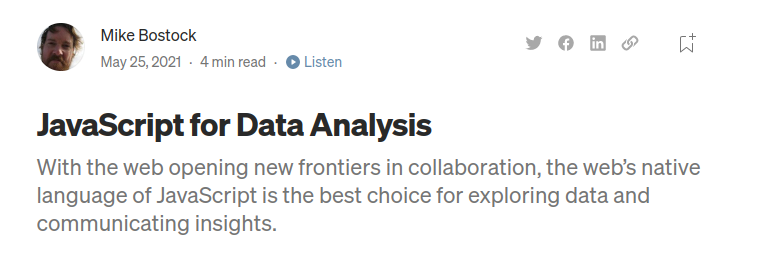
https://towardsdatascience.com/javascript-for-data-analysis-2e8e7dbf63a7
2 Observable Javascript 📊
Uma linguagem dedicada à visualização de dados para a Web
2.1 O que é o Observable?
Observable javascript (ojs) é um conjunto de melhorias ao JavaScript criado por Mike Bostock (também autor do D3). O Observable JS destaca-se pela sua execução reactiva, que é particularmente adequada para a exploração e análise interactiva de dados. O objetivo é fazer com que uma comunidade trabalhe em conjunto em torno da visualização de dados.
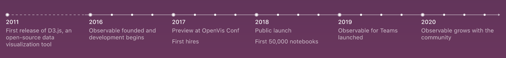
Observable é também uma start-up fundada por Mike Bostock e Melody Meckfessel, que oferece uma plataforma 100% online para conceber, partilhar e distribuir visualizações de dados.

É também uma plataforma Web disponível em https://observablehq.com/ que aloja cadernos de notas computacionais sobre visualização de dados.
Os cadernos de notas são como publicações em blogues. Contêm texto, imagens e conteúdos multimédia. Podem ser organizados em colecções. Estão disponíveis em linha através de um URL. Como seria de esperar, também contêm linhas de código. O objetivo: programação letrada (literate programming).
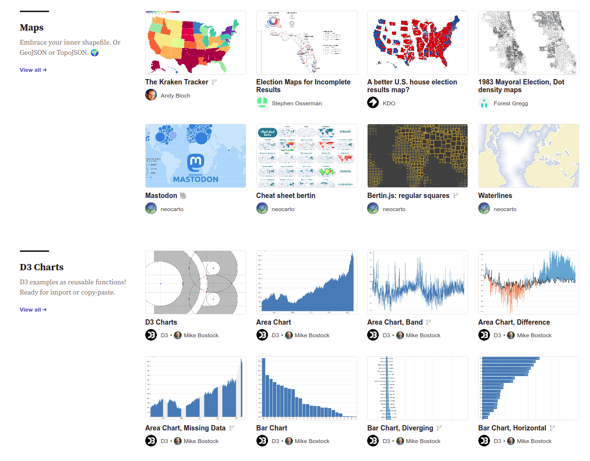
Referências
Reactive, reproducible, collaborative: computational notebooks evolve, par Jeffrey M. Perkel. https://www.nature.com/articles/d41586-021-01174-w
Javascript for data Analysis, par Mike Bostock https://towardsdatascience.com/javascript-for-data-analysis-2e8e7dbf63a7
2.2 Observable notebooks
Cadernos de notas observáveis Os blocos de notas observáveis permitem-lhe trabalhar em linha, diretamente no seu navegador, sem necessidade de instalar qualquer software. Naturalmente, é necessária uma boa ligação à Internet.
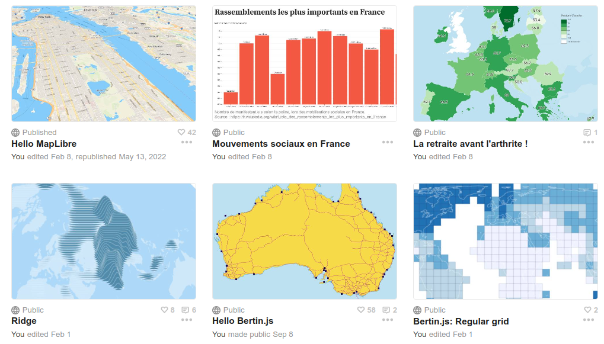
Por exemplo : https://observablehq.com/trending
2.3 Observable framework
Este ano, a Observable lançou uma nova ferramenta designada por Observable Framework.
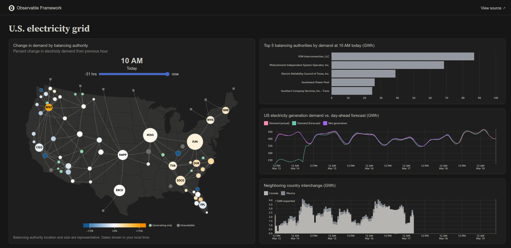
2.4 Observable em Quarto

Quarto é um ecosistema de publicação que pode ser utilizado para criar documentos markdown, artigos, relatórios, apresentações, sítios Web, blogues e livros em HTML, PDF, Word, ePub e outros formatos.
Permite-lhe criar conteúdos dinâmicos em diferentes linguagens: Python, R, Julia e Observable JavaScript.
Isto torna possível criar documentos, relatórios e análises totalmente reproduzíveis.
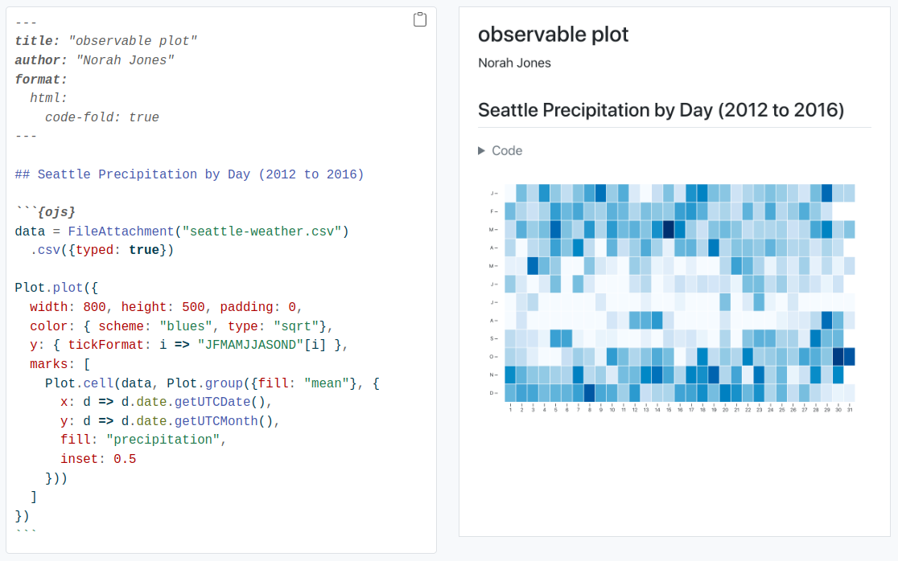
2.5 JavaScript ≠ ojs
OJS é JavaScript + muitas bibliotecas pré-carregadas:
| Symbol | Name | Version |
|---|---|---|
| _ | Lodash | 4.17.21 |
| aq | Arquero | 4.8.8 |
| Arrow | Apache Arrow | 4.0.1 |
| d3 | D3.js | 7.8.5 |
| dot | Graphviz | 0.2.1 |
| htl | Hypertext Literal | 0.3.1 |
| Inputs | Observable Inputs | 0.10.6 |
| L | Leaflet | 1.9.3 |
| mermaid | Mermaid | 9.1.6 |
| Plot | Observable Plot | 0.6.11 |
| SQLite | SQL.js | 1.7.0 |
| topojson | TopoJSON Client | 3.1.0 |
| vl | Vega, Vega-Lite | 5.22.1, 5.2.0 |
O OJS é também uma evolução da linguagem javascript para a tornar adequada à análise e apresentação de dados na Web.
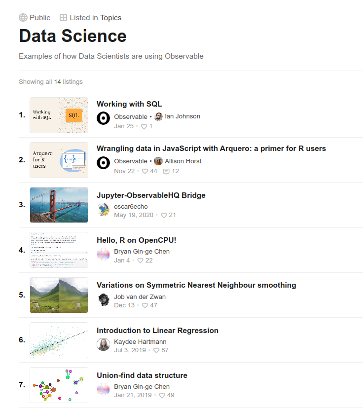
2.6 As células / chunk {ojs}
Em Quarto, é possível escrever/executar código Observável usando {ojs} chunks.
Cada linha define uma variável e uma célula que deve ser única.
célula 1 :
a = 5célula 2 :
b = 7célula 3 :
a + b12Com o ojs, a ordem de escrita não importa 🤔 Por isso, podemos escrever :
Isto :
c * d24Antes disso
c = 3e isso
d = 8A razão é que a relação entre as células é topológica.

Cada célula deve ser única. Por conseguinte, não é permitido redefinir nenhuma destas variáveis.
e = 10
e = 5OJS Runtime Error
e is defined more than once
OJS Runtime Error
e is defined more than once
Por conseguinte, é frequentemente útil criar blocos de código com {...} quando o processamento se torna mais complexo.
{
let val1 = 8;
let val2 = 7;
val1 = 5;
return val1 * val2;
}35Mas, na maioria das vezes, para fazer este tipo de cálculo, escrevemos funções. Assim:
function sum(a, b) {
return a + b;
}
// chamada da função
sum(10, 30)40Ou desta forma :
multi = (a, b) => a * b
// Chamada à função
multi(3, 8)24Esta abordagem pode ser desconcertante. Mas tem uma grande vantagem. Permite-lhe organizar um documento independentemente da forma como o codifica. Por exemplo, pode colocar um mapa no topo da página e o código que o gera num apêndice técnico na parte inferior.
2.7 Inputs / Entradas
Observable fornece inputs prontos a utilizar.
👉 toogle
viewof mute = Inputs.toggle({label: "Mute", value: true})
muteviewof mute = Inputs.toggle({label: "Mute", value: true})
mute👉 range
viewof gain = Inputs.range([0, 11], {value: 5, step: 0.1, label: "Gain"})
gainviewof gain = Inputs.range([0, 11], {value: 5, step: 0.1, label: "Gain"})
gain👉 checkbox
viewof colors = Inputs.checkbox(["red", "green", "blue"], {label: "color"})
colorsviewof colors = Inputs.checkbox(["red", "green", "blue"], {label: "color"})
colors👉 radio
viewof color = Inputs.radio(["red", "green", "blue"], {label: "color"})
colorviewof color = Inputs.radio(["red", "green", "blue"], {label: "color"})
color👉 select
cidades = ["Coimbra", "Faro", "Braga"]
viewof minhacidade = Inputs.select(cidades, {value: "steelblue", label: "Escolhe uma cidade"})
minhacidadecidades = ["Coimbra", "Faro", "Braga"]
viewof minhacidade = Inputs.select(cidades, {value: "steelblue", label: "Escolhe uma cidade"})
minhacidade👉 text
viewof text = Inputs.text()
textviewof text = Inputs.text()
text👉 textarea
viewof textarea = Inputs.textarea()
textareaviewof textarea = Inputs.textarea()
textarea👉 date
viewof date = Inputs.date()
dateviewof date = Inputs.date()
date👉 color
viewof pickcolor = Inputs.color({label: "cor preferida", value: "#4682b4"})
pickcolorviewof pickcolor = Inputs.color({label: "cor preferida", value: "#4682b4"})
pickcolor👉 file
viewof file = Inputs.file()
fileviewof file = Inputs.file()
file👉 formulário
2.8 Tudo é reativo 🔥
Com Observable, graças à relação topológica entre as células, tudo é reativo. Sempre que se move algo, tudo o que depende desse movimento é reexecutado.
viewof age = Inputs.range([15, 70], {label: "age", value: 30, step: 1,})
viewof name = Inputs.text({label: "name", value: "João"})viewof age = Inputs.range([15, 70], {label: "age", value: 30, step: 1,})
viewof name = Inputs.text({label: "name", value: "João"})Por exemplo
md`O meu nome é **${name}** e tenho **${age}** anos :-)`md`O meu nome é **${name}** e tenho **${age}** anos :-)`Voltamos ao exemplo SVG de há pouco:
{
const svg = d3
.create("svg")
.attr("viewBox", [0, 0, 500, 60])
.style("background-color", "#CCC");
svg
.append("circle")
.attr("cx", 50)
.attr("cy", 30)
.attr("r", 25)
.style("fill", "#e04a28");
return svg.node();
}{
const svg = d3
.create("svg")
.attr("viewBox", [0, 0, 500, 60])
.style("background-color", "#CCC");
svg
.append("circle")
.attr("cx", 50)
.attr("cy", 30)
.attr("r", 25)
.style("fill", "#e04a28");
return svg.node();
}O utilizador poderia facilmente modificar o desenho, substituindo valores por variáveis controladas por entradas. Por exemplo:
viewof cx = Inputs.range([30, 470], {value: 50, step: 1, label: "posicao"})
viewof col = Inputs.color({ value: "#e04a28", label: "cor"})
viewof r = Inputs.range([5, 30], {value: 25, step: 0.1, label: "raio"})viewof cx = Inputs.range([30, 470], {value: 50, step: 1, label: "posicao"})
viewof col = Inputs.color({ value: "#e04a28", label: "cor"})
viewof r = Inputs.range([5, 30], {value: 25, step: 0.1, label: "raio"})2.9 Os dados
Os dados são adicionados utilizando a instrução FileAttachment()
👉 ficheiro csv
data1 = FileAttachment("data/afrika_data.csv").csv()data1 = FileAttachment("data/afrika_data.csv").csv()Os dados são importados e convertidos automaticamente para o formato json
data1Para os visualizar, utilize-se a instrução Inputs.table()
Inputs.table(data1)Inputs.table(data1)👉 ficheiro xlsx
Também é possível importar ficheiros Excel
classeur = FileAttachment("data/afrika.xlsx").xlsx()classeur = FileAttachment("data/afrika.xlsx").xlsx()classeurTemos acesso à lista das folhas assim:
classeur.sheetNamesclasseur.sheetNamesDepois, podemos escolher a folha a abrir
data2 = classeur.sheet("data", {
headers: true
})data2 = classeur.sheet("data", {
headers: true
})data2👉 Apresentação dos dados
Os dados podem ser formatados utilizando JavaScript puro.
subdata1 = data1
.filter((d) => +d.ESPVIE > 65)
.map((d) => ({ code: d.iso3, nom: d.nom, POP: d.POP, PIB: d.PIB, ESPVIE: d.ESPVIE }))
.sort((a, b) => d3.descending(b.ESPVIE, a.ESPVIE))O resultado é o seguinte:
subdata1 = data1
.filter((d) => +d.ESPVIE > 65)
.map((d) => ({ code: d.iso3, nom: d.nom, POP: d.POP, PIB: d.PIB, ESPVIE: d.ESPVIE }))
.sort((a, b) => d3.descending(b.ESPVIE, a.ESPVIE))subdata1Pode-se também utilizar arquero. Ver : https://observablehq.com/@observablehq/data-wrangler.
subdata2 = aq
.from(data1)
.filter((d) => d["ESPVIE"] > 65)
.rename({ iso3: "code" })
.select("code", "nom", "POP", "PIB", "ESPVIE")
.orderby("ESPVIE")
.objects()subdata2 = aq
.from(data1)
.filter((d) => d["ESPVIE"] > 65)
.rename({ iso3: "code" })
.select("code", "nom", "POP", "PIB", "ESPVIE")
.orderby("ESPVIE")
.objects()O resultado é o mesmo:
subdata2👉 ficheiro geoJSON
Para utilizar geometrias, deve ser utilizado prioritariamente o formato geoJSON.
basemap = FileAttachment("data/africa.json").json()basemap = FileAttachment("data/africa.json").json()basemapAqui está a estrutura de um geoJSON
Object {type: "FeatureCollection", name: "world", features: Array(50)}E eis o que aparece se o mostrarmos (veremos como mais tarde…)
2.10 Bibliotecas externas
O javascript observável não é um ecossistema fechado. Existem milhões de bibliotecas javascript no NPM (o equivalente ao CRAN para o R). É possível usá-las.
Aqui, podemos importá-los diretamente utilizando a instrução require()
geo = require("geotoolbox")geo = require("geotoolbox")Generalização de mapas
viewof k = Inputs.range([0.01, 0.5], { label: "k", step: 0.01, value: 0.05 })
geo.simplify(world, { k })viewof k = Inputs.range([0.01, 0.5], { label: "k", step: 0.01, value: 0.05 })
geo.simplify(world, { k })2.11 Importações
Como dissemos anteriormente, o Observable é também uma plataforma web que aloja blocos de notas.
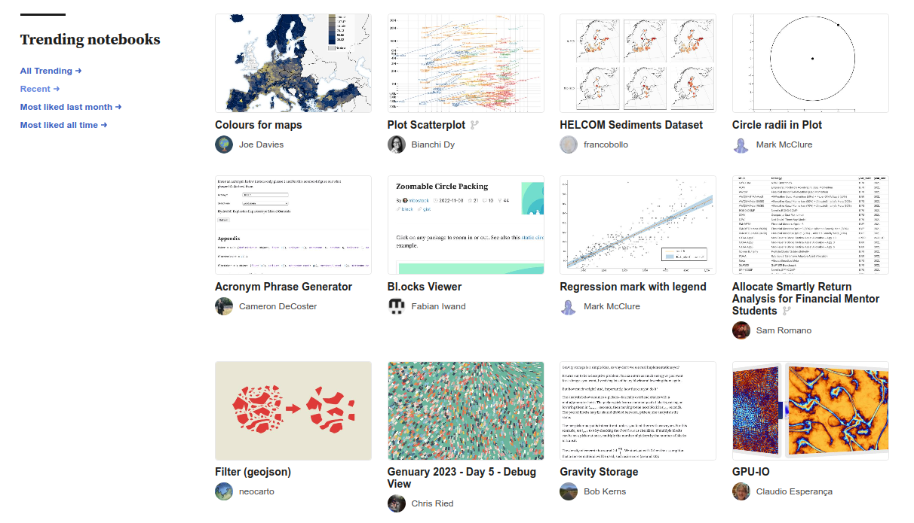
Se tiver uma ligação à Internet, pode importar qualquer célula de qualquer caderno utilizando a função import. Por outras palavras, todos os blocos de notas alojados em observablehq.com funcionam como api.
import {SankeyChart} from "@d3/sankey"
import {energy} from "@d3/sankey"import {SankeyChart} from "@d3/sankey"
import {energy} from "@d3/sankey"A seguir, pode-se utilizar esta função.
chart = SankeyChart({
links: energy
}, {
nodeGroup: d => d.id.split(/\W/)[0], // take first word for color
width,
height: 600
})chart = SankeyChart({
links: energy
}, {
nodeGroup: d => d.id.split(/\W/)[0], // take first word for color
width,
height: 600
})